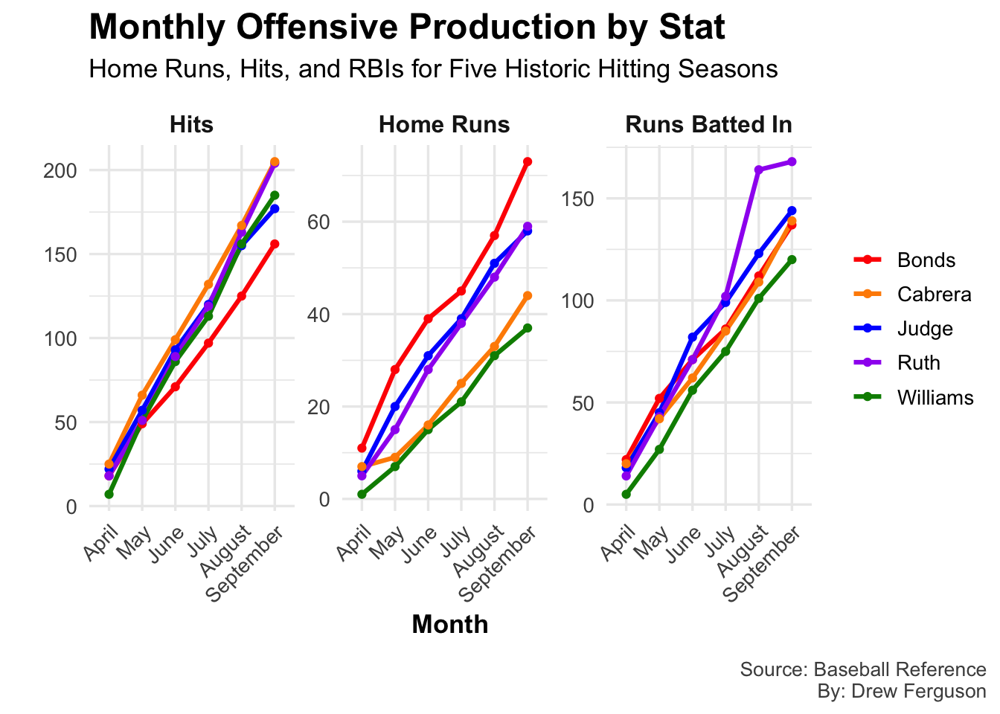

Code
library(tidyverse)
library(ggrepel)
library(ggplot2)
library(tibble)
library(scales)
judge <- read.csv("Judge.csv")
miggy <- read.csv("Miggy.csv")
bonds <- read.csv("Bonds.csv")
ted <- read.csv("Williams.csv")
ruth <- read.csv("Ruth.csv")
monthly_stats <- tibble(
Player = rep(c("Judge", "Bonds", "Williams", "Ruth", "Cabrera"), each = 18),
Month = rep(c("April", "May", "June", "July", "August", "September"), times = 15),
Stat = rep(rep(c("Home Runs", "Hits", "Runs Batted In"), each = 6), times = 5),
Value = c(
6, 20, 31, 39, 51, 58,
22, 57, 93, 120, 155, 177,
18, 45, 82, 99, 123, 144,
11, 28, 39, 45, 57, 73,
18, 49, 71, 97, 125, 156,
22, 52, 71, 86, 112, 137,
1, 7, 15, 21, 31, 37,
7, 51, 86, 113, 156, 185,
5, 27, 56, 75, 101, 120,
5, 15, 28, 38, 48, 59,
18, 51, 89, 119, 163, 204,
14, 43, 71, 102, 164, 168,
7, 9, 16, 25, 33, 44,
25, 66, 99, 132, 167, 205,
20, 42, 62, 85, 109, 139
)
)
monthly_stats$Month <- factor(monthly_stats$Month,
levels = c("April", "May", "June", "July", "August", "September"))
ggplot(monthly_stats, aes(x = Month, y = Value, color = Player, group = Player)) +
geom_line(linewidth = 1.1) +
geom_point(linewidth = 2) +
facet_wrap(~Stat, scales = "free_y", nrow = 1) +
scale_color_manual(values = c(
"Judge" = "blue",
"Bonds" = "red",
"Williams" = "green4",
"Ruth" = "purple",
"Cabrera" = "darkorange"
)) +
labs(
title = "Monthly Offensive Production by Stat",
subtitle = "Home Runs, Hits, and RBIs for Five Historic Hitting Seasons",
x = "Month",
y = "",
caption = "Source: Baseball Reference
By: Drew Ferguson"
) +
theme_minimal(base_size = 13) +
theme(
plot.title = element_text(face = "bold", size = 18),
plot.subtitle = element_text(size = 13, margin = margin(b = 10)),
legend.title = element_blank(),
strip.text = element_text(face = "bold", size = 12),
axis.title.x = element_text(face = "bold"),
axis.text.x = element_text(angle = 45, hjust = 1),
plot.caption = element_text(size = 10, color = "gray30", hjust = 1, margin = margin(t = 12)),
plot.caption.position = "plot"
)